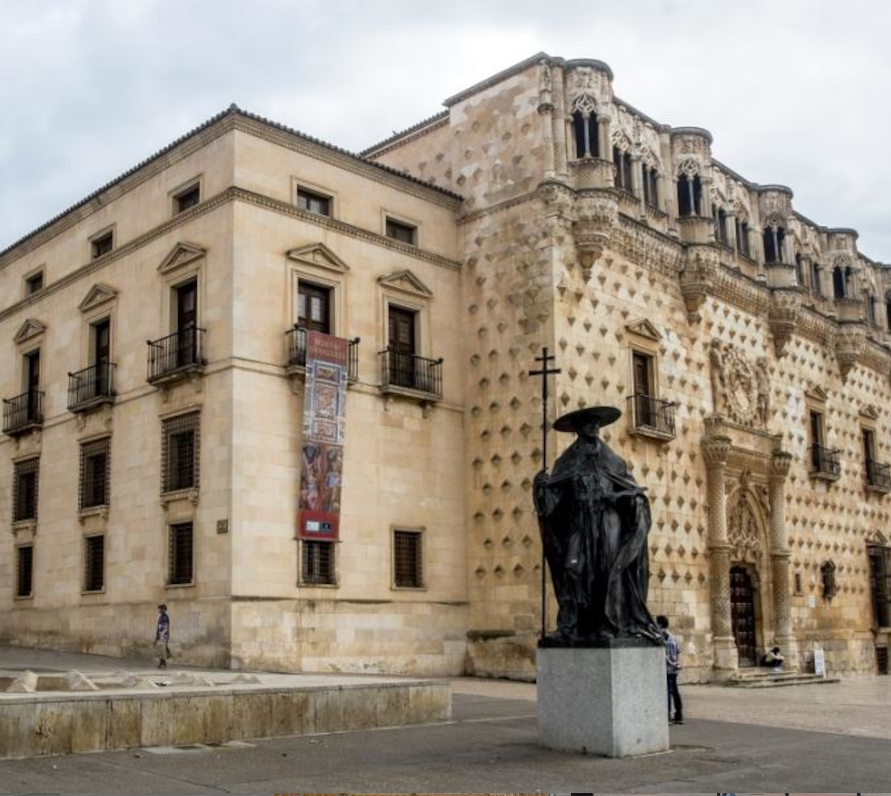
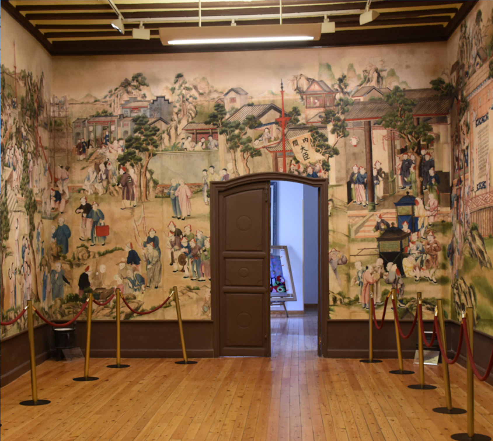
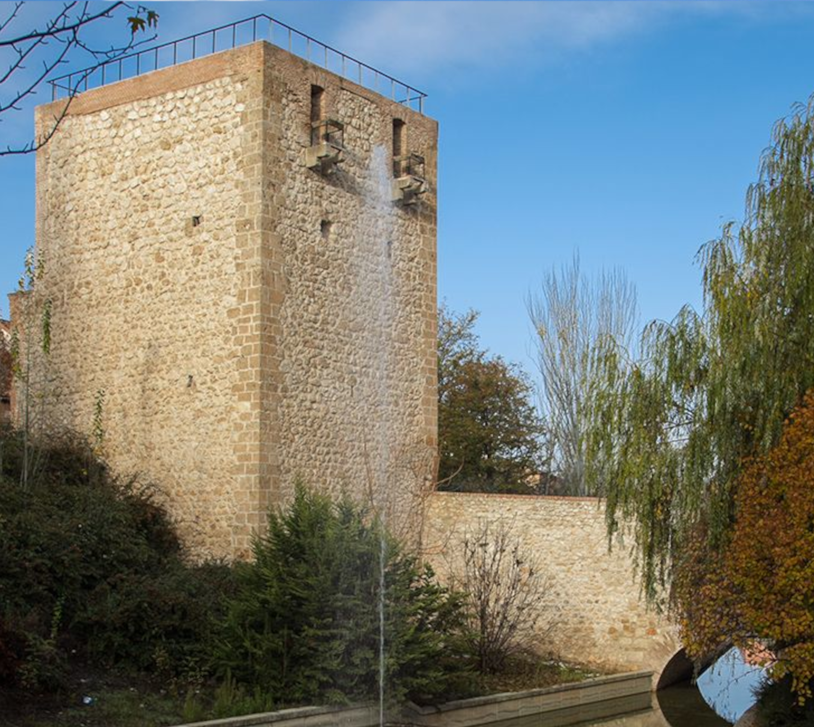
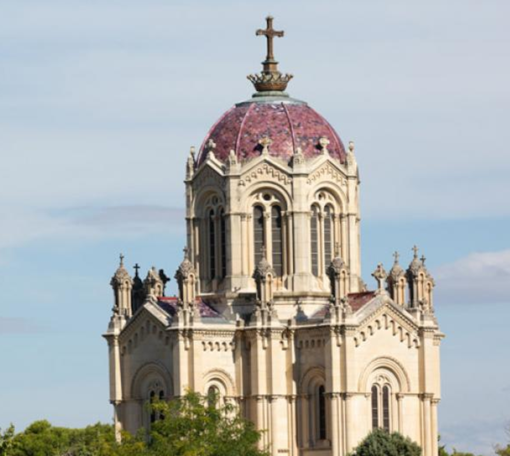
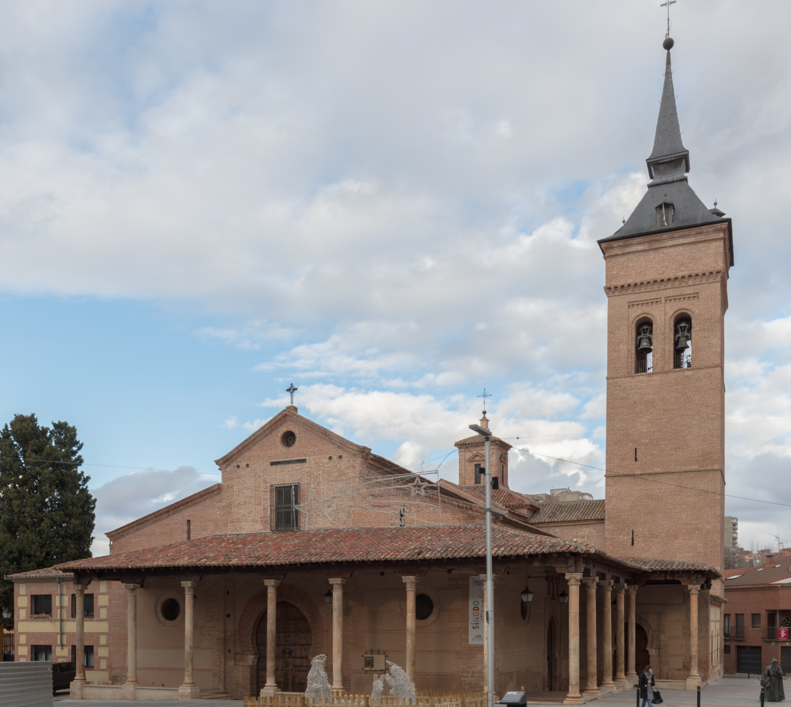

Palacio del Infantado
Conocido por su icónica fachada, a día de hoy aloja el Museo Provincial de Guadalajara.
Iglesia de San Ginés
Ubicada frente a la plaza de Santo Domingo, esta iglesia destaca por su planta robusta.

Palacio de la Cotilla
En este palacio se esconde una de las únicas colecciones de pinturas chinas del continente.
Torreón del Alamín
Esta estructura defensiva constituye un recuerdo viviente de la Edad Media en el municipio.
Panteón de la Duquesa de Sevillano
Construido en el 1887, esta maravilla arquitectónica corona el parque de las Adoratrices.
Concatedral de Santa María
Esta iglesia de estilo mudéjar actúa como sede de la Diócesis Sigüenza-Guadalajara junto a la de Sigüenza.
